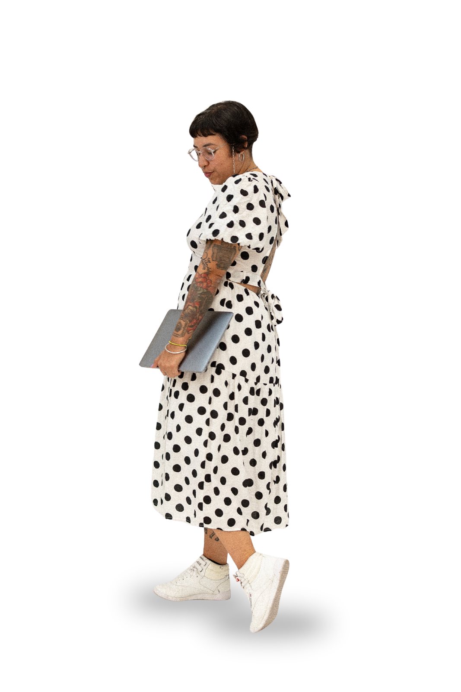

El caos no es tu enemigo*
* Es tu materia prima. Soy Isis Elinor: organizo mentes creativas para que el desorden se vuelva movimiento y cada voz encuentre su lugar.
Yo también tengo mi caos.
La diferencia es que lo sé manejar. Lleva cada pendiente a su día y míralo tomar forma.
Iniciadora
Empiezo lo que otras posponen. Doy el primer paso y sostengo la estructura para que la idea no se quede en la cabeza.
Traductora
Hablo varios idiomas creativos porque los he vivido. Conecto mundos que no se entendían y hago que la info fluya.
Hecha a mano
Imperfecta y honesta. Nada de plantilla: cada proyecto lleva mi puntada y su propia claridad emocional.
Tres cosas que soy, en todo lo que hago.
Todo lo que se necesita para sostener una idea.
Una productora no es una sola cosa. Es un montón de músculos trabajando a la vez — estos son los míos. Toca uno para ver dónde vive.

Lo que hago contigo.
Según dónde estés: montando algo grande, entendiendo tu proceso, o buscando con quién experimentar.
Dirección creativa de producciones
Diseño y dirijo tours, lanzamientos y eventos donde coexisten visiones distintas. Cada rol claro, la información fluyendo, cada voz escuchada.
→Mentoría para creativos
Uno a uno, para entender tu propio proceso. Mapeamos tus territorios confusos, nombramos tus patrones y encontramos lo que de verdad funciona para ti.
→Comunidad y experimentación
Espacios donde equivocarse es parte del plan. Reúno a gente que hace preguntas mejores que respuestas y sostengo la claridad del grupo en la incertidumbre.
→Iniciar
Veo qué necesita moverse y lo muevo. Arranco cuando la brújula emocional dice que el proyecto está alineado.
Experimentar
Una década probando formas de hacer las cosas: algunas fallaron lindo, otras abrieron caminos nuevos.
Enseñar
Comparto lo que funciona para que no experimentes desde cero. Te guío por tus propios experimentos.
Conectar
Veo patrones donde otros ven ruido. Conecto personas cuyas preguntas se responden entre sí.
Diez años poniendo ideas de pie.
Producción de eventos, festivales y audiovisual entre Venezuela y Argentina.
May 2025 — hoyProject & Tour ManagerEntr3t3nimientoBuenos Aires · Remoto+
Monitoreo y auditoría con agentes de IA propios que detectan fallas y optimizan tiempos; flujos de trabajo que organizan el día a día de artistas y productores; y tour management de logística integral, con respuesta rápida ante imprevistos.
2018 — hoyCoordinadora de comunicaciones & productoraHabeatatCaracas · Buenos Aires+
Comunicación, imagen y producción de la marca y sus artistas. Produje la Batalla de Maestros (BDM), la Final Nacional de la Red Bull Batalla de Gallos y el proyecto “Gotas” de Liana Malva hasta el Skoll World Forum.
2022 — hoyDirectora de proyectoExpoDeStickersCaracas, VE+
Lideré la reconceptualización del evento anual de diseñadores e ilustradores junto a Mao Orsini y Okso, hasta volverlo una referencia para creativos visuales.
2024Asesora de producción & productora de campoFestival Legado LatinoBuenos Aires, AR+
Riders técnicos, camerinos e itinerario de tarima de un festival de música: entradas y salidas al segundo y transiciones sin cortes entre artistas.
2021 — 2022Productora de eventosYM Produce y ComunicaCaracas, VE+
Coordinación de 37 eventos —corporativos, showcases, ruedas de prensa y festivales de música— incluidos Sukha Festival, La Escuelita y Urbana.
2019 — 2021Facilitadora de Producción AudiovisualUniversidad Audiovisual de VenezuelaCaracas, VE+
Convertí la cátedra en un laboratorio de experimentación: nuevas herramientas, formatos y narrativas para producir en un entorno multipantalla.
2015 — 2017Gerente de Producción audiovisualCanal ConCiencia TVCaracas, VE+
Montaje, contratos y ejecución de proyectos audiovisuales. Dirigí el seriado “Lo Vital Hazlo Viral” y codirigí el unitario “EntreBits”.
*Ganadora Mejor Producción Innovadora · Premios TAL 2015, Montevideo.
En El Medio del Lío*
Notas honestas desde adentro de la industria creativa. Sin filtro, con preguntas mejores que respuestas.
Detrás de escena
Producciones en marcha, experimentos y el día a día del oficio creativo.
Lo que se puso de pie
Una playlist con producciones que salieron al mundo. Del papel a la pantalla.
Las mentes creativas no se controlanse conectan*
Lo que dicen quienes trabajaron conmigo.
Su profunda comprensión de la producción creativa, combinada con su capacidad para transformar ideas abstractas en proyectos tangibles, ha sido fundamental para el éxito de grandes proyectos. Metódica, apasionada y creativa en partes iguales.
Isis es creativa, organizada y detallista. No se le escapa nada y siempre está innovando. Tenerla en tu proyecto garantiza un producto bien realizado y la felicidad del equipo.
Isis es excelente productora audiovisual, una persona creativa y responsable. Sus proyectos tienen un sello original. Recomendada 100%.
Una excelente productora y profesional, pero sobre todo, una estupenda persona. Responsable, dedicada y detallista: siempre un gran apoyo en cada equipo.
Sinónimo de organización, perseverancia y proactividad. Si quieres en tu equipo a alguien que impulse, organice y lidere, debes contratar a Isis Elinor.
Conocedora del mundo audiovisual multipantalla y multiplataforma. Para ConCiencia TV fue clave en “Cerefritos”, ganador del premio internacional TAL a mejor formato.
¿Cuánta Crisis necesitas?
Me dicen Crisis. Responde con honestidad y te digo cuánto de mí le hace falta a tu proyecto.
Estructuremos juntos.
Cuéntame qué traes entre manos. Lo comunico, lo inicio, y luego te invito a experimentar conmigo.